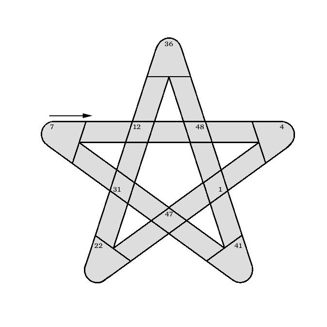

|
 |
|
| (2151) |
(1312.4) |
(41153.7) |
Acolyte Yar shuffled, removing ace, kings, and queens (7)
Alien chained to egg-laying mammal (7)
At first, Geordi engineered radioactive meals for a microorganism (4)
Beginnings of Rules of Acquisition: Remove top grade tungsten in straight line (3)
Bird enclosure loses retrograde AI; Ezri initially goes in instead to label company (5)
Black-eyed pea for Riker (7)
Computer game brought in to liberate Triskelion (6)
Crazed group with last of Ferengi, ends of Loque'eque is ready to go (6)
Disturbs Toff's last three objects (7)
Ergo, Gorn or Lily oddly gives Chinese snack (7)
Evil alien adept and can be taxed (8)
In the end, McCoy approving the harnessing of oxen (6)
Janeway's back on remote (3)
Laren goes after half of amaranth for college class, in short (6)
Leaders of Romulus and Malon Prime are way off (4)
Mesoamerican sculpture angered Yar at man (5 3)
Mexican store to draw leaders of Nuvians, Denebians, Andorians (6)
Montgomery is one from Edinburgh town originally (5)
Neelix removing nitrogen, subtracting nine, including erbium for a certain fisherman (5)
Nomad must sterilize if you are guilty of this baseless fear (5)
Pair of Efrosians attach to fuse, gush (6)
Picard's head stuffed in a tote - unfortunately, it holds his Earl Grey (6)
Quiet Ensign or Commander was made smaller (6)
Speaking only has confused Nog sinning (3-7)
Spock, a terribly disguised girl (4)
Strangely apt, Producer Berman is Irish saint (7)
Torres plays, loses, so takes ace from deck (7)
Troi messed up several scenes; result could be read to the unruly (4 3)
Ultimately, Borg made the jazz devotee Riker an old man (6)
Wild party involves mixed-up EKG and Barclay briefly backwards (6)
{kind=link}
{kind=link}
{kind=link}
{kind=link}
{kind=link}